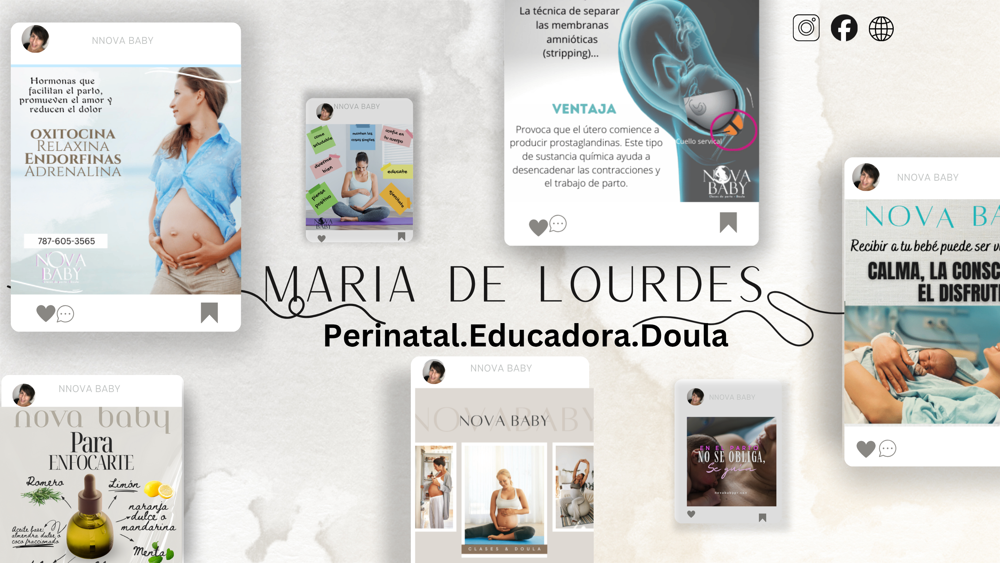

Doula Certificada en Puerto Rico
Apoyo continuo, respetuoso y basado en evidencia durante tu embarazo, parto y posparto, adaptado a tus necesidades.
¿Qué hace una doula?
Como doula certificada y con más de 30 años de experiencia, te ofrezco apoyo personalizado para que vivas tu proceso de maternidad con seguridad y confianza, en San Juan, Caguas, Bayamón, Dorado y alrededores.
- Apoyo emocional y físico 24/7 en últimas semanas de embarazo
- Técnicas efectivas de alivio no farmacológico para el dolor
- Facilitación en la comunicación con el equipo médico
- Apoyo cercano en parto y primeras horas del posparto
- Seguimiento posparto a domicilio (opcional)

Mi compromiso contigo
Respeto total a tus decisiones, sin imposiciones. Apoyarte para sentirte segura, escuchada y empoderada, sea cual sea tu plan de parto.
Cuento con los privilegios como Doula certificada cumpliendo con los estandares de los Hospitales mas reconocidos del area Metro. Por lo que soy considerada Doula y no como acompañante.
Preguntas Frecuentes
- ¿Qué incluye el apoyo en lactancia a domicilio?
- Ofrecemos evaluación de agarre, solución a problemas como pezones planos, apoyo emocional, orientación sobre alimentación complementaria, y consejos para el cuidado integral del bebé.
- ¿Por qué es beneficioso recibir apoyo en casa?
- Recibir apoyo en casa evita desplazamientos y estrés, permitiendo un acompañamiento en el entorno familiar, respetando el ritmo de madre y bebé.
- ¿En qué zonas de Puerto Rico se ofrece el servicio?
- Los servicios están disponibles en San Juan, Caguas, Bayamón, Dorado y zonas cercanas, con atención personalizada.
- ¿Cómo puedo solicitar una consultoría en lactancia?
- Puedes solicitar consultoría fácilmente a través del botón de WhatsApp disponible en la página o contactando directamente para acordar una visita a domicilio.